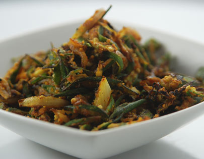

Besanwali Bhindi
Ingredients
Ladyfingers (bhindi) 8-10Gram flour (besan) 4 tablespoons
Oil 2 tablespoons
Onion 1 medium
Cumin seeds 1 teaspoon
Salt to taste
Coriander powder 1 1/2 teaspoon
Turmeric powder 1 teaspoon
Red chilli powder 1 teaspoon
Dry mango powder (amchur) 1/2 teaspoon
Onion seeds (kalonji) 1/2 teaspoon
Method Preparation
Thinly slice the bhindi diagonally. Heat oil in a non-stick pan. Slice the onion. Add cumin seeds and onion to the pan and saute till onion is soft. Add bhindi, salt, coriander powder, turmeric powder and red chilli powder. Toss to mix and cook for 3-4 minutes, stirring occasionally. Add besan and toss to mix. Add amchur and mix well. Add onion seeds and mix again. Cook, stirring occasionally, till bhindi is done. Adjust salt, if required. Serve hot.